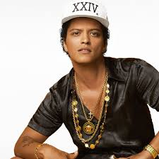
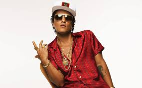
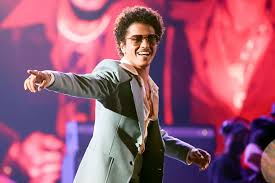
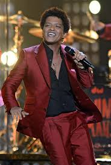
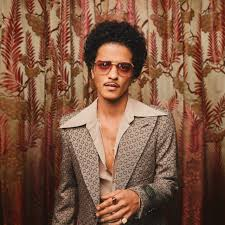

Bruno Mars, born on October 8th 1985 is an American singer, songwriter, producer, and entertainer known for his dynamic voice, retro-inspired sound, and energetic performances.
Raised in Honolulu, Hawaii, he grew up in a musical family and began performing at a young age, which laid the foundation for his career.
Mars rose to fame with his debut album Doo-Wops & Hooligans and solidified his status as one of the biggest stars in modern pop and R&B. Known for blending funk, soul, pop, and reggae influences, he has produced multiple chart-topping singles and record-breaking collaborations, including “Uptown Funk”.
Bruno Mars has earned numerous awards and is celebrated for his eccentric live shows, charismatic stage presence, and his versatility. He continues to be one of the most successful and influential entertainers of his generation.
Grenade -2010
Just the way you are -2010
Uptown Funk -2014
Thats what I like -2016
APT -2024
Doo-Wops & Hooligans -2010
Unorthodox Jukebox -2012
24k Magic -2016
An Evening with Silk Sonic -2021
Has sold over 150 million records
Has won over 16 Grammy awards
Was the first artist to have six diamond-certified songs
His 24k magic world tour ranks among the highest-grossing tours in history